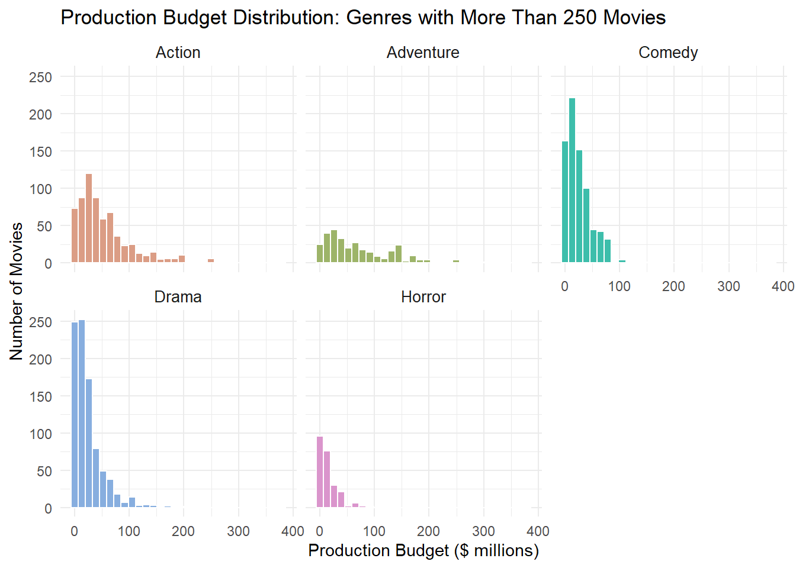
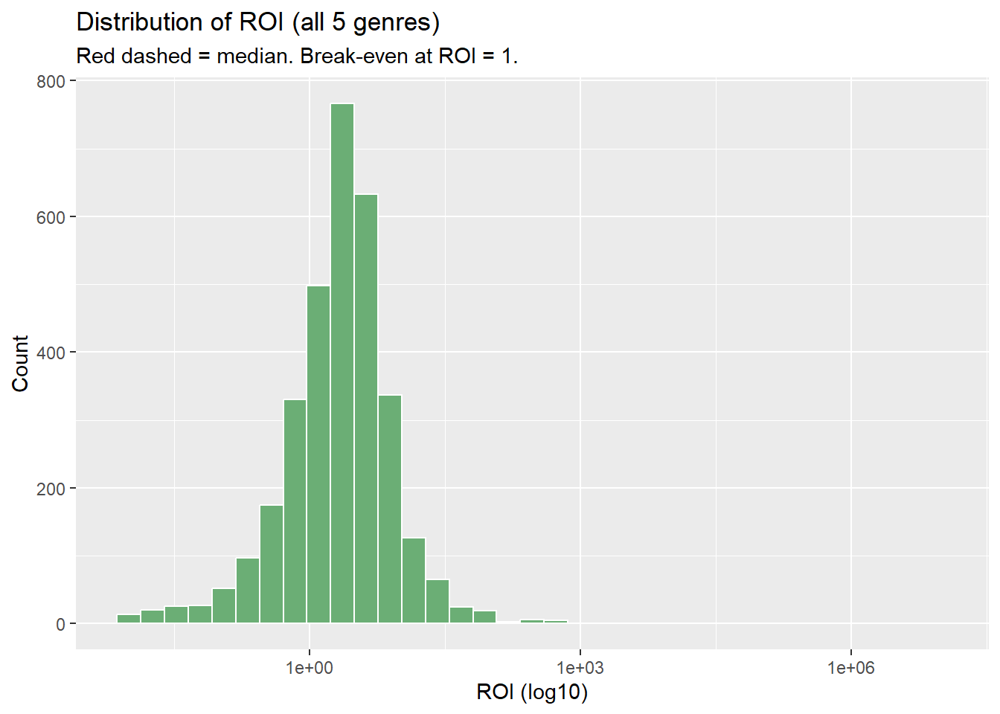
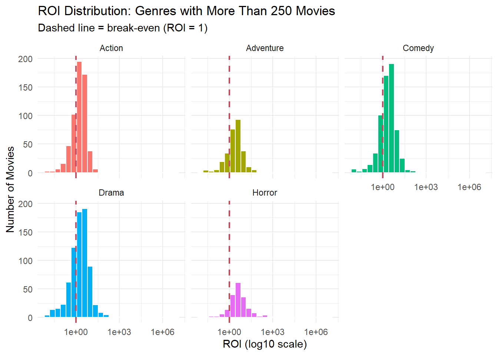
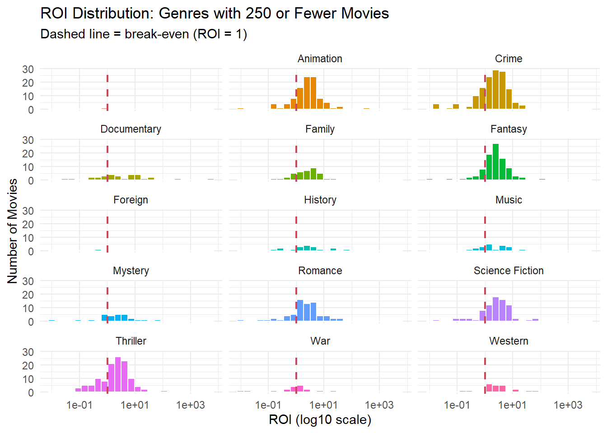
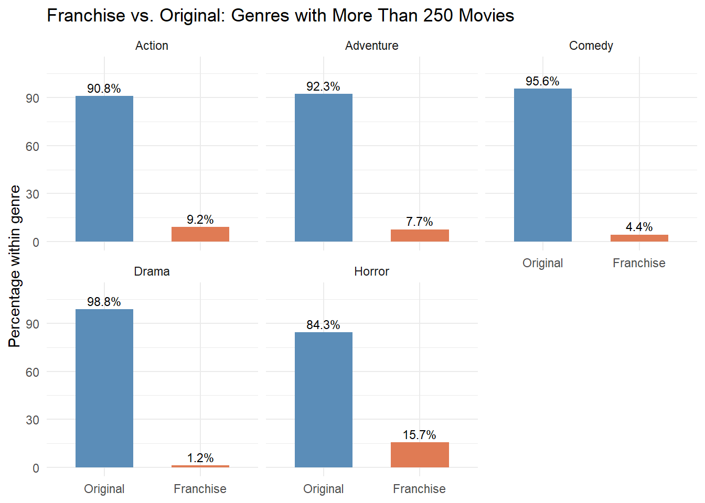
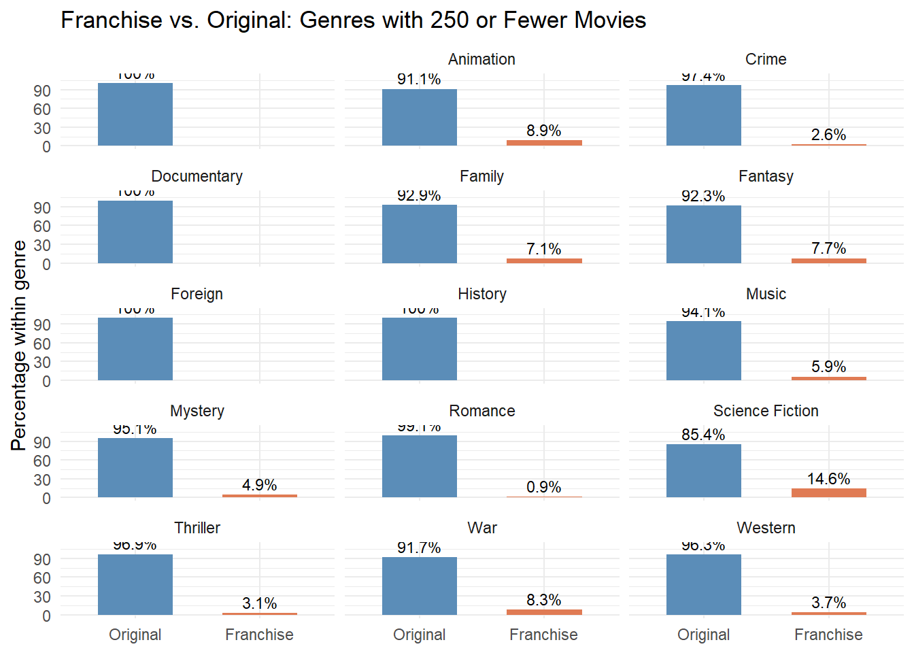

primary_genre
1
2 Action
3 Adventure
4 Animation
5 Comedy
6 Crime
7 Documentary
8 Drama
9 Family
10 Fantasy
11 Foreign
12 History
13 Horror
14 Music
15 Mystery
16 Romance
17 Science Fiction
18 TV Movie
19 Thriller
20 War
21 Western
Data Cleaning
Before any analysis was conducted, missing-data placeholders were identified and replaced with NA rather than removed. Per the variable dictionary, budget values of exactly $0 or below $10,000 are placeholder entries, and revenue values of $0 indicate missing box-office data. Rather than dropping these rows entirely, the affected values were converted to NA, retaining all 3,426 films in the five focus genres. Rows with NA budget or revenue are excluded automatically by R when calculating financial summaries and plots, but are retained for analyses such as franchise composition that do not require financial data.
n mean median sd Q1 Q3 max
1 3229 2954.82 2.3 150610.1 1.02 4.42 8500000
# Franchise — uses all 3426 rows, no na.rm neededmovies_clean |>count(franchise_status) |>mutate(pct =round(n /sum(n) *100, 1))
franchise_status n pct
1 Original 4543 94.6
2 Franchise 260 5.4
The typical film cost $25M to produce (median budget) and returned 2.3x its budget at the box office (median ROI). The mean ROI of 13.6x is not a reliable benchmark — it is driven almost entirely by a handful of micro-budget Horror films with extreme returns, most notably Paranormal Activity (~12,890x ROI). Franchise films represent just 7% of the historical slate, with Originals making up the remaining 93%.
Overall Production Budget Distribution
Figure 1 shows a positively skewed distribution of production budgets. Most films have budgets below $50 million, with the highest concentration between approximately $10 million and $50 million. The number of films decreases as budgets increase, although a small number of films have budgets exceeding $150 million, with a few reaching above $250 million.
This suggests that high production budgets are relatively uncommon, while most films are produced with more modest budgets. The Head of Production should consider this skewed distribution when planning future budgets, as a small number of high-budget films may influence the overall mean.
Figure 1: Overall production budget distribution across all genres.
Production Budget Distribution Across Genres
Production budgets are positively skewed across most genres, meaning most films have relatively low budgets, while a few have much higher budgets. Action and Adventure show wider budget ranges, while Comedy and Drama have more films concentrated at lower budget levels.
Genres were divided into two groups based on their number of films: more than 250 that is shown in Figure 2 and 250 or fewer shown in Figure 3.
genre_counts <- movies_clean |>count(primary_genre, name ="movie_count")budget_data <- movies_clean |>filter(!is.na(budget), budget >0) |>left_join(genre_counts, by ="primary_genre") |>mutate(genre_group =if_else( movie_count >250,"Above 250 movies","250 or fewer movies" ) )budget_above_250 <- movies_clean |>filter(!is.na(primary_genre), primary_genre !="TV Movie",!is.na(budget), budget >0 ) |>left_join(genre_counts, by ="primary_genre") |>filter(movie_count >250) |>mutate(budget_m = budget /1e6)ggplot(budget_above_250, aes(x = budget_m, fill = primary_genre)) +geom_histogram(bins =30, colour ="white") +facet_wrap(~ primary_genre, scales ="fixed") +scale_fill_manual(values = grDevices::hcl.colors( dplyr::n_distinct(budget_above_250$primary_genre),palette ="Dynamic" ) ) +labs(title ="Production Budget Distribution: Genres with More Than 250 Movies",x ="Production Budget ($ millions)",y ="Number of Movies" ) +theme_minimal() +theme(legend.position ="none",strip.text =element_text(size =10) )

Figure 2: Production budget distribution for genres with more than 250 movies.
Among the lower-volume genres, Crime, Thriller and Romance mainly have lower budgets, while Fantasy and Science Fiction show wider budget ranges. These patterns should be interpreted with consideration of the number of films in each genre.
Figure 3: Production budget distribution for genres with 250 or fewer movies.
Overall, the graphs show differences in budget distribution across genres and highlight potential high-budget outliers. The Head of Production should consider these patterns when planning budgets, alongside ROI and franchise/original status, as budget size alone does not indicate profitability.
ROI distribution (Overall and by genre)
In Figure 4 distribution is concentrated around a revenue-to-budget ratio of approximately 1, with a right-skewed tail extending towards much higher values. The red dashed line represents the median ROI, while the break-even point is ROI = 1. Most films have ratios relatively close to the central range, but a small number achieve exceptionally high revenue relative to their production budgets.
This suggests that financial performance varies substantially across films. The Head of Production should consider both the typical ROI and the unusually high values when assessing the slate. Since ROI is calculated as revenue divided by production budget, a ratio above 1 means revenue exceeded the production budget, but does not necessarily indicate profit after marketing and other costs.
ggplot(movies_clean, aes(x = roi +0.01)) +geom_histogram(bins =35, fill ="#6BAE75", colour ="white") +scale_x_log10() +geom_vline(xintercept =median(movies_clean$roi) +0.01,colour ="#C9485B", linewidth =1, linetype ="dashed") +labs(title ="Distribution of ROI (all 5 genres)",subtitle ="Red dashed = median. Break-even at ROI = 1.",x ="ROI (log10)",y ="Count" )

Figure 4: Overall distribution of revenue-to-budget ratios across the selected genres.
The ROI distributions vary across genres, with most films concentrated around relatively low revenue-to-budget ratios and a smaller number achieving much higher ratios. Among genres with more than 250 movies, Action and Drama have distributions concentrated around the break-even point (ROI = 1), while Comedy shows a wider spread and a longer upper tail. Adventure and Horror also show variation in ROI, with some films performing above break-even.
# ROI distribution: genres with more than 250 moviesggplot( budget_above_250 |>filter(!is.na(roi), is.finite(roi), roi >-0.01),aes(x = roi +0.01, fill = primary_genre)) +geom_histogram(bins =25, colour ="white") +scale_x_log10() +facet_wrap(~primary_genre, ncol =3) +geom_vline(xintercept =1.01,colour ="#C9485B",linewidth =0.8,linetype ="dashed" ) +labs(title ="ROI Distribution: Genres with More Than 250 Movies",subtitle ="Dashed line = break-even (ROI = 1)",x ="ROI (log10 scale)",y ="Number of Movies" ) +theme_minimal() +theme(legend.position ="none")

Figure 5: ROI distributions for genres with more than 250 movies.
For genres with 250 or fewer movies, the distributions differ considerably. Crime, Fantasy, Romance and Science Fiction show many films with ROI ratios above 1, while Thriller has a wider spread of outcomes. Some genres, such as Documentary, History, Mystery and Music, have sparse or widely spread observations, so their distributions should be interpreted cautiously because they contain fewer films.
#| label: fig-roi-below-250#| fig-cap: "ROI distributions for genres with 250 or fewer movies.ggplot( budget_below_250 |>filter(!is.na(roi), is.finite(roi), roi >-0.01),aes(x = roi +0.01, fill = primary_genre)) +geom_histogram(bins =25, colour ="white") +scale_x_log10() +facet_wrap(~primary_genre, ncol =3) +geom_vline(xintercept =1.01,colour ="#C9485B",linewidth =0.8,linetype ="dashed" ) +labs(title ="ROI Distribution: Genres with 250 or Fewer Movies",subtitle ="Dashed line = break-even (ROI = 1)",x ="ROI (log10 scale)",y ="Number of Movies" ) +theme_minimal() +theme(legend.position ="none")

The graphs show that financial outcomes vary both within and between genres. The Head of Production should consider the proportion of films below break-even, the spread of ROI values and the presence of unusually high-performing films when assessing genre performance. However, ROI is calculated as revenue divided by production budget, so a value above 1 indicates revenue exceeded the production budget, not necessarily that the film made a profit after marketing and other costs.
Franchise and Original Film Composition
The overall slate is dominated by original films, which account for 94.6% of films, while franchises represent only 5.4%. This indicates that the historical slate relies mainly on standalone productions rather than established franchises.
Across genres with more than 250 movies, original films dominate every genre. Drama has the highest proportion of original films at 98.8%, followed by Comedy at 95.6%. Horror has the largest franchise share in this group at 15.7%, followed by Action at 9.2% and Adventure at 7.7%.
movies_clean |>filter(!is.na(primary_genre), primary_genre !="TV Movie") |>add_count(primary_genre, name ="movie_count") |>filter(movie_count >250) |>group_by(primary_genre, franchise_status) |>summarise(n =n(), .groups ="drop") |>group_by(primary_genre) |>mutate(pct = n /sum(n) *100) |>ggplot(aes(x = franchise_status, y = pct, fill = franchise_status)) +geom_col(width =0.6) +geom_text(aes(label =paste0(round(pct, 1), "%")),vjust =-0.4, size =3 ) +scale_fill_manual(values =c(Original ="#5B8DB8", Franchise ="#E07B54") ) +facet_wrap(~primary_genre, ncol =3) +labs(title ="Franchise vs. Original: Genres with More Than 250 Movies",x =NULL,y ="Percentage within genre" ) +coord_cartesian(ylim =c(0, 110)) +theme_minimal() +theme(legend.position ="none")

The same pattern appears among genres with 250 or fewer movies, where original films remain the majority. Science Fiction has the largest franchise share at 14.6%, followed by Animation at 8.9% and War at 8.3%. In contrast, Documentary and History consist entirely of original films in the displayed data, while Romance has a franchise share of only 0.9%.
movies_clean |>filter(!is.na(primary_genre), primary_genre !="TV Movie") |>add_count(primary_genre, name ="movie_count") |>filter(movie_count <=250) |>group_by(primary_genre, franchise_status) |>summarise(n =n(), .groups ="drop") |>group_by(primary_genre) |>mutate(pct = n /sum(n) *100) |>ggplot(aes(x = franchise_status, y = pct, fill = franchise_status)) +geom_col(width =0.6) +geom_text(aes(label =paste0(round(pct, 1), "%")),vjust =-0.4, size =3 ) +scale_fill_manual(values =c(Original ="#5B8DB8", Franchise ="#E07B54") ) +facet_wrap(~primary_genre, ncol =3) +labs(title ="Franchise vs. Original: Genres with 250 or Fewer Movies",x =NULL,y ="Percentage within genre" ) +coord_cartesian(ylim =c(0, 110)) +theme_minimal() +theme(legend.position ="none")

The Head of Production should consider these differences when evaluating opportunities to develop new original projects or invest in franchise films. However, the percentages describe the composition of the slate rather than financial success, so they should be considered alongside budget and ROI results before making investment decisions.
Slate Trends Over Time (2000–2016)
Franchise films make up 7% of the overall slate. Horror (21%) and Action (11%) have the highest franchise concentration; Drama sits lowest at just 1%.
Franchise share increased towards 2016, reaching approximately 16%. Median production budgets generally declined from around $33 million in 2000 to $22 million in 2014–2015, before recovering slightly. In contrast, median ROI increased after 2010, reaching approximately 2.9 in 2016.
Overall, the slate shows a shift towards more franchise films and higher revenue relative to production budgets, despite lower median budgets. However, these trends do not prove that increased franchise production caused the improvement in ROI.
Summary for the Head of Production
The overall production budget distribution is positively skewed, with most films having relatively low budgets and a small number requiring substantially higher investment. Budget distributions vary across genres, with Action and Adventure showing wider ranges. The genre comparisons also show that most films are originals, accounting for 94.6% of the slate, while franchises represent only 5.4%. However, franchise representation varies by genre, with Horror having the highest franchise share among genres with more than 250 films (15.7%), and Science Fiction having the highest share among lower-volume genres (14.6%).
ROI distributions vary across genres, with some films generating revenue well above their production budgets and others performing below break-even. From 2000 to 2016, the median ROI generally increased after 2010, reaching approximately 2.9 in 2016. Over the same period, median production budgets generally declined before a modest recovery, while franchise share rose to approximately 16% by 2016. These trends suggest improved revenue relative to production budgets alongside a growing franchise presence, although they do not establish a causal relationship.
Before analysis, zero budgets and revenues were treated as missing values, and blank text values were converted to NA. Movies with missing, zero or negative budgets and records with missing genres were excluded from relevant plots, while the original dataset was retained. These data quality issues may affect the number of observations available for each analysis. The Head of Production should consider budget levels, genre composition, ROI and franchise representation together when planning future productions, rather than relying on any single measure.